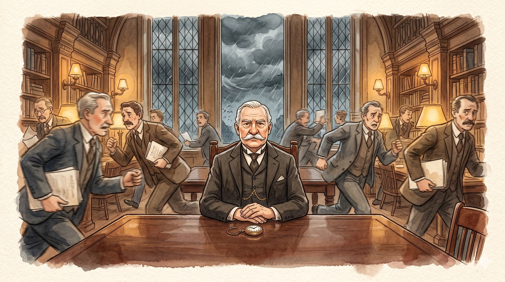
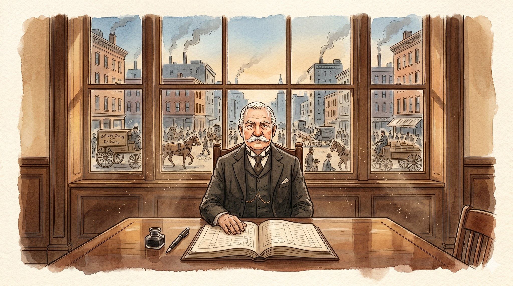
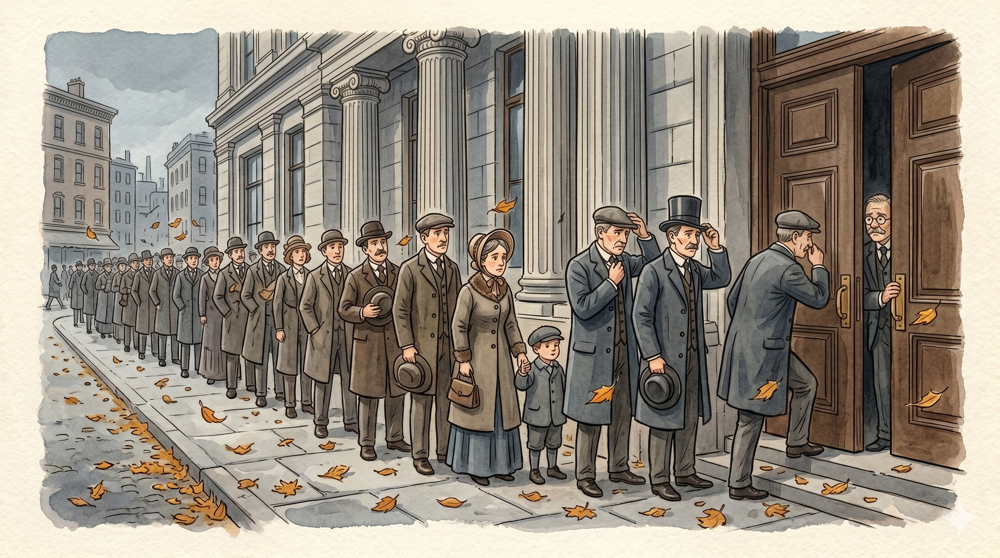
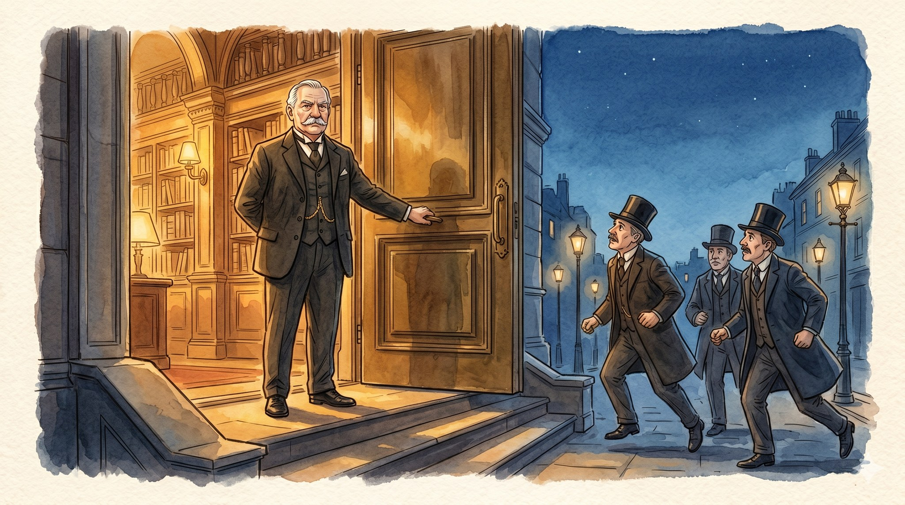
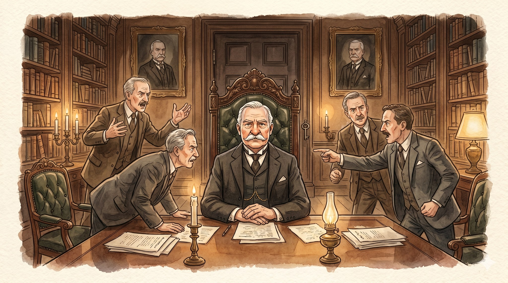
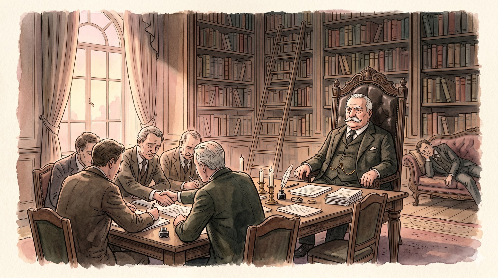

The Stillest Man in the Room

A story for ages 7–10 about how a steady person can change a noisy room.

Long ago, in a big, loud American city, there lived a quiet man named Pierpont Morgan.
Even as a boy, he had liked numbers better than games and quiet rooms better than crowded ones.
Now he sat at his desk, working a long column of figures, while the city rattled and shouted on the other side of the glass.
By the time his beard turned white, Pierpont was the most famous banker in the whole country.

Then one autumn, something bad happened. It was called a panic.
Everyone got scared at the very same time. People worried that the banks had lost their savings, so they ran to get their money back. All of it, right now.
Lines wound around the block in the cold autumn wind. One bank wobbled. Then another.
And if the banks fell over, the whole country would fall over with them.

Pierpont rode the long train back to the city. He did not give a speech. He did not write to the newspapers.
Instead, he opened his own private library — the hushed room with the rare old books — and sent word to every important banker in the city:
Come. Tonight.
And through the blue evening, under the gas lamps, the bankers came hurrying toward the warm golden door.

Inside, the bankers argued. They shouted. They blamed each other. Some stood up to leave.
Click. Pierpont locked the door.
He sat in his big leather chair, the one shaped almost like a throne, and folded his hands. He did not shout. He looked at them, one by one.
"Nobody leaves this room," he said, "until we have decided how to fix this."
The candles burned low. Pierpont sat still.

He sat still for hours. He sat still for days.
And at last, as pale gold morning light slid across the long table, the tired bankers agreed. They put their own money together, all in one pile, and used it to hold the wobbling banks up until the fear passed.
The country did not fall over.
One still man. One noisy room. And a whole country, back on its feet.